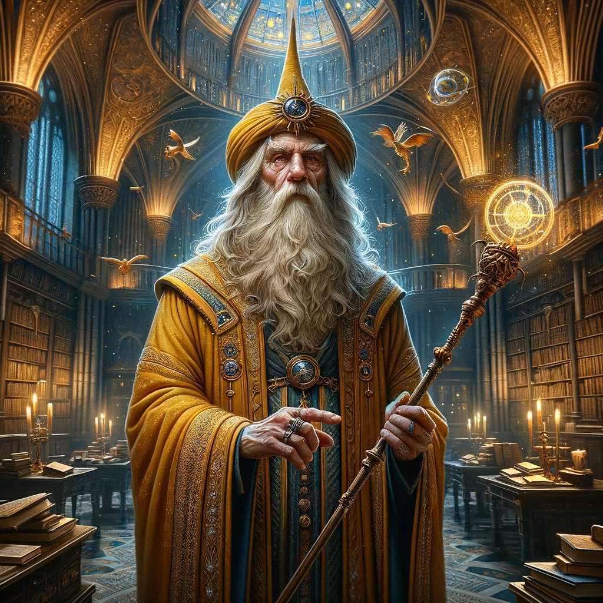

My Photos
Professor Zev Ardon's Journey

Professor Ardon's early life in Tel Aviv, where his fascination with magic began.

Graduating with honors in magical theory, Zev began his academic career.

He was appointed as the head of the Wizardry Department at Ben Gurion University.